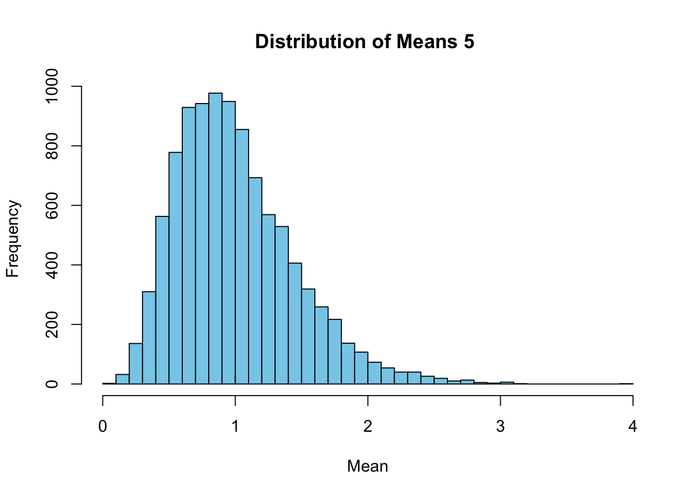
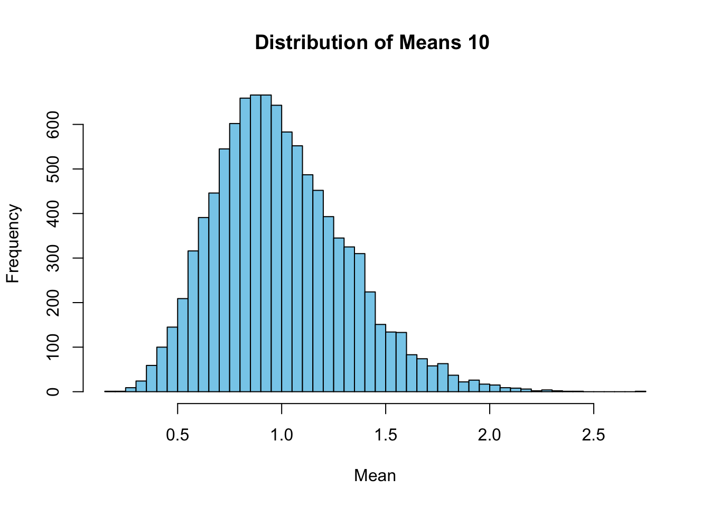
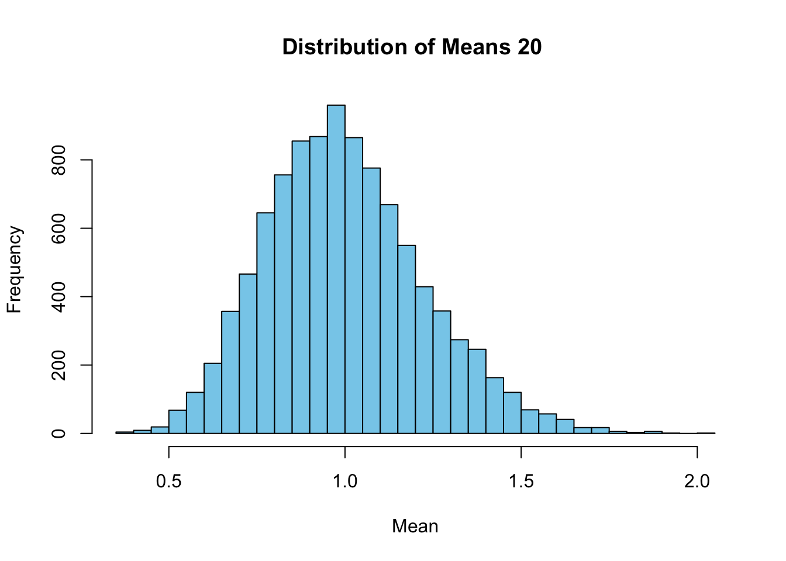

Use R code to find the “mean”, “max”, “1st Quartile”, “3rd Quartile”, “Median”, and “Min” for each column of the dt data table. (Hint: You do not have to use a map function)
summary(dt)
x y w z
Min. : 87.0 Min. : 95.0 Min. : 91.0 Min. : 94.0
1st Qu.:104.0 1st Qu.:105.5 1st Qu.:122.0 1st Qu.:139.2
Median :143.0 Median :148.5 Median :159.5 Median :176.5
Mean :147.8 Mean :167.0 Mean :163.8 Mean :163.3
3rd Qu.:195.5 3rd Qu.:201.2 3rd Qu.:212.0 3rd Qu.:185.2
Max. :210.0 Max. :300.0 Max. :234.0 Max. :218.0
Problem 2:
Write a function that uses a for loop that, for each iteration, randomly draws 5 observations from an exponential distribution with “rate” parameter 1 (use rexp()) and calculates its “mean”. It should do this 10,000 times. Choose an appropriate plot to plot the distribution of “means”.
p2 <-function() { means <-numeric(10000)for (i in1:10000) { samples <-rexp(5, rate =1) means[i] <-mean(samples) }hist(means, breaks =50, col ="skyblue", xlab ="Mean", main ="Distribution of Means")}p2()
2_a:
Repeat part 1 by using a map_*() function.
map_dbl(dt, mean)
x y w z
147.8333 167.0000 163.8333 163.3333
2_b:
Repeat part 1 by using the replicate() function.
replicate(1, sapply(dt, sd))
[,1]
x 54.45151
y 79.12016
w 58.40348
z 44.66617
2_c:
Use a another for loop that will print out plots for sample sizes of 5, 10, and 20 observations (instead of just 5).
p2c <-function(sample_sizes) {for (size in sample_sizes) { means <-numeric(10000)for (i in1:10000) { samples <-rexp(size, rate =1) means[i] <-mean(samples) }hist(means, breaks =50, col ="skyblue", xlab ="Mean", main =paste("Distribution of Means", size, "")) }}p2c(c(5, 10, 20))



Problem 3:
Use and show R coding to calculate the “standard deviation” for each variable of the data table mtcars using the “Special For Loop Method”.
data(mtcars)output <-vector("double", ncol(mtcars))for (i inseq_along(mtcars)) { output[i] <-sd(mtcars[[i]])}output